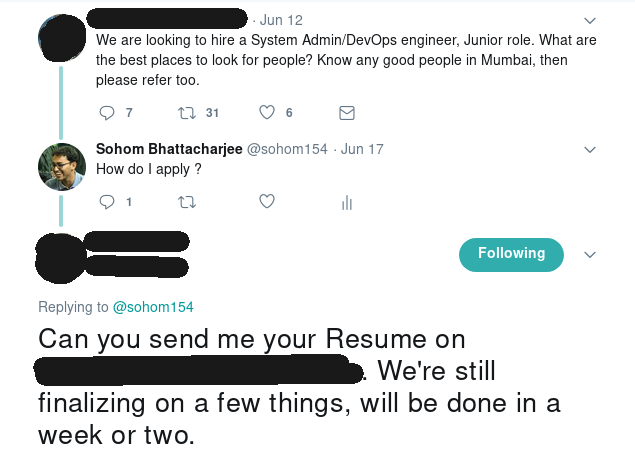
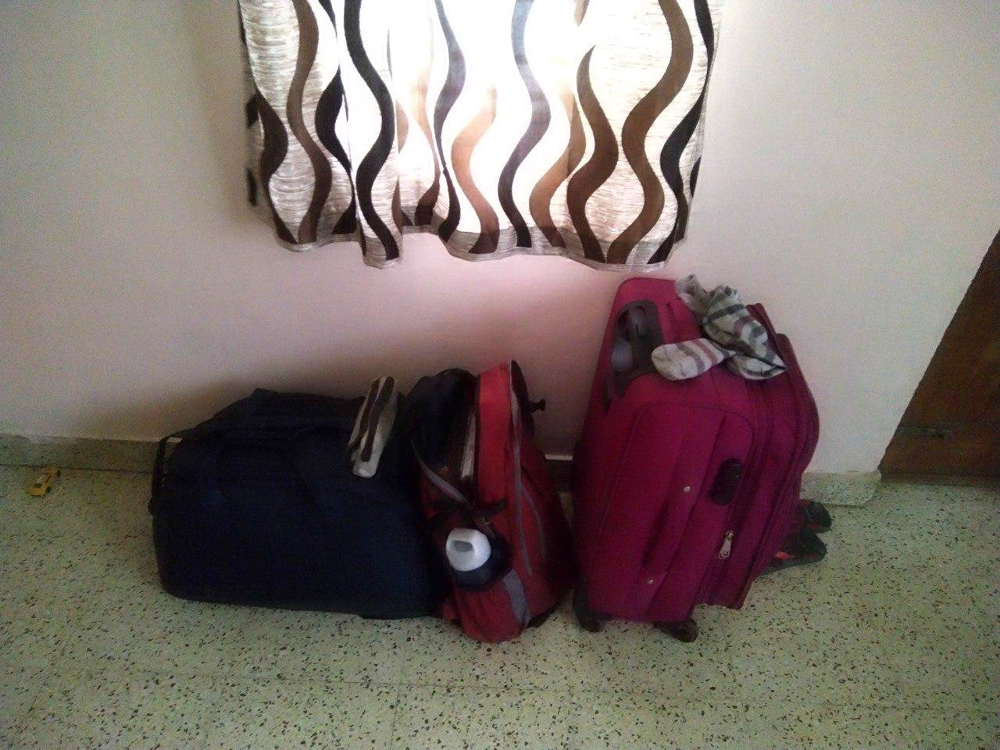

So things got really interesting in the previous month.
After my degree course got over, I was supposed to join Deloitte as a campus recruit. Before the joining I attended the training program for campus recruits for about two weeks.
In the mean time I responded to a tweet about a job position and that tweet changed my life. That tweet let to a series of interviews which culminated in a very generous job offer from a company in Mumbai. The best part is that this is the most perfect job that I could hope for. My "official" job title is Linux Administrator, but there is more to it.

This is the tweet that changed everything... :-P
Tl;Dr
I am moving to Mumbai. In fact I leave in like half an hour for my flight. I am at my aunts place right now. This place was the first building I walked into after I first arrived in Bangalore and I thought it would be very poetic if this was the last building I walk out of when I am leaving Bangalore for good (at least in near foreseeable future). I will be visiting Bangalore from time to time though.
So What about Bangalore ?
Bangalore would always be the place I grew the F$#& up; because quite honestly in Kolkata until I left, i was used to stuff like my mother waiting with cooked food for me and someone else taking care of my documents and having pocket money etc. All this changed when I first moved to Bangalore. I remember not getting dinner one day during the first week when I feel asleep for a slightly longer time. It was a good learning experience. Living alone hits you in the face with a truck. But, its fun and you get used to it after a while.
The down side of this is that you get so accustomed to being in-charge that you begin to hate your family for trying to micromanage everything from half a country away. :-P
Anyway, I am moving now, maybe I will come back here (to stay) if my works brings me.
About moving ...
To be completely honest; I am slightly excited about moving. But, that's it slightly excited. I really like to work on things that I like and for that I am willing to move anywhere. People who have interacted with me during these past three years know how much obsessive I can be with my work. So as long as my work is getting done, I don't really care where I live. (Maybe this is not an ideal thing.. but again I don't really care)
Moreover, I do not own too many things, so moving for me is like a really long vacation. My most value-able possessions are my books (SICP and CLRS !!). I don't cook for myself yet, I generally outsource it to the nearest shop. I think this will change in Mumbai though. Also I do not have too items in the luggage front as well. Just three bags (including my backpack) which is really very less for someone moving to a different city and vacating their accommodation of three years.
So technically I can literally stuff everything I own into three bags. :-)

I have been very very fortunate to meet/know some of the people that I know. All of them have had some impact on my life. I wanted to list all of them here but that would be a disservice to the people not listed.
I haven't figured out a place to stay in Mumbai yet. I am going to "wing" it. :-P
About work
THIS is the thing I am most excited about. I value my work greatly above everything else. This job even though it is in a small company, will give me a lot of learning experiences than Deloitte. At Deloitte joining as a fresher I would be at the bottom of the hierarchy, however in this company I will be part of a very small technology team and interestingly enough I will be the second sysadmin. Thus the scope of responsibility is great. I will also have more decision making powers than at Deloitte. Plus they are paying my well. Moreover I will get to work with some of the most cutting edge open source technologies and LINUX. (keywords are open source and Linux)
About FSMK
Most of the work I do for FSMK can be done remotely, so I doubt that it will be a problem. However I am also in the process of mentoring a second batch of sysadmins at FSMK so that these kids can take up the work.
Apart from this I will surely miss attending/speaking at the camps and all.
A good thing is that Vikram from FSMK lives in Mumbai and he lives quite near to my office. So maybe I will get some pointers from him about similar organizations.
SO...
So this is it. I will continue posting about Theoretical Computer Science and scheme and everything else from Mumbai. It will take some time. I need to get set up and get up to speed at work.
so yeah..
My next post will be from Mumbai.
It has been awesome Bangalore!!! <3